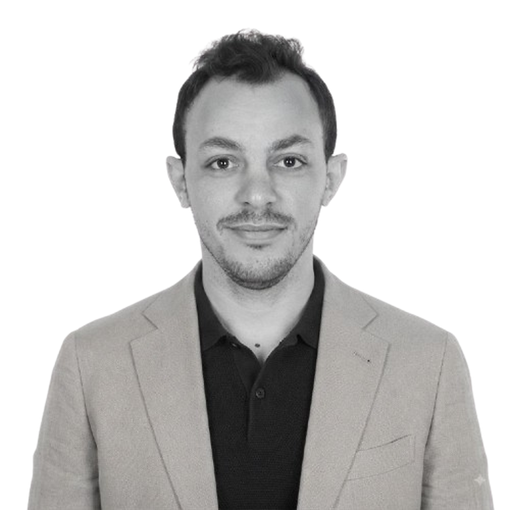

Mechatronics EngineerPortfolio / 2026
Hello there
Open to selected opportunities
I engineer reliable systems.
I integrate mechanical design, system modelling, and embedded systems development to turn complex ideas into validated, reliable engineering solutions.
- Experience
- 8+ years
- Focus
- Mechatronics · MBD · Embedded
- Based in
- Lisbon, Portugal

01
About me
Engineering across mechanics, models and embedded control.
With 8+ years of multidisciplinary experience, I work across mechanical design, model-based development, simulation, systems integration, validation and digital twins. I bring a practical design mindset to systems that must perform reliably in the real world.

Engineering beyond the screen.
I value the point where calculations, drawings and models meet fabrication, installation and the people operating the system. Field exposure keeps my decisions practical, safe and buildable.

Curiosity finds the way forward.
Exploration and continuous learning shape how I approach unfamiliar problems: observe closely, challenge assumptions and connect ideas across disciplines.
02
Engineering impact
Built around outcomes, not only tools.
A concise view of how I contribute across the engineering lifecycle—from first principles and system architecture to implementation, validation and field-ready delivery.
Concept to validation
Translate requirements into system models, mechanical architecture, control logic and evidence-led verification.
Requirements · Modelling · V&VConnected engineering
Connect physical assets, embedded targets and IoT data to support monitoring, diagnosis and digital-twin workflows.
Embedded · IoT · Digital TwinsIndustrial delivery
Balance analysis, safety, DFM and field constraints so solutions remain buildable, maintainable and reliable.
Safety · DFM · Field Integration
MECHATRONICS✦MODEL-BASED DESIGN✦EMBEDDED SYSTEMS✦DIGITAL TWINS✦
✦✦✦✦
03
Engineering workflow
From model to embedded reality.
A dynamic view of the connected workflow I use to move between plant behaviour, control logic, target code and validation.
MECHATRONICSMODEL → CODEMATLAB / Simulink · C / C++
04
Selected work
Projects designed for the real world.
05
Experience
A multidisciplinary engineering journey.
Roles spanning consulting, mechanical design, digital twins and systems integration.
Engineering Consultant
Industrial insight, connected assets and decision-ready engineering data for Meta Plat Inc.
Digital TwinsIoTData
Mechanical Design & Digital Twin Engineer
Design, simulation and manufacturable systems for PMICO Inc. across demanding industrial applications.
SolidWorksANSYSDFM
Mechanical Design & Systems Integration Engineer
Coordinated mechanical, electrical, software and BMS interfaces for KONE EG systems.
V&VBMSSystems
Tools & capabilities
A focused engineering toolbox.
Model-based engineering
System modelling, control design and progressive verification from virtual models to target hardware.
- MATLAB / Simulink
- Control systems
- MIL · SIL · HIL
Embedded & connected systems
Implementation-aware engineering for embedded targets, data exchange and connected assets.
- C / C++
- IoT & MQTT
- Python
Mechatronics & validation
Multidisciplinary integration shaped by mechanics, sensors, actuation, simulation and field constraints.
- System integration
- Digital twins
- Verification & validation
01 / Experience
Building at the intersection of mechanics and data.
Mechanical design experience across industrial consulting, oil & gas, manufacturing, vertical transport and connected engineering systems.
Professional experience
2021 — 2026
Consulting
Engineering Consultant — Mechanical & Industrial
Meta Plat Inc.
- Supported industrial clients with design workflow optimisation and engineering KPI performance.
- Created Power BI and Tableau monitoring tools for asset health and production metrics.
- Advised teams on IoT and digital twin integration for predictive maintenance.
2018 — 2020
Design & simulation
Mechanical Design & Digital Twin Engineer
PMICO Inc.
- Designed mechanical systems and steel structures for oil & gas, power and manufacturing projects.
- Built SolidWorks and ANSYS models for monitoring and predictive maintenance.
- Applied DFM and risk identification to reduce manufacturing cost.
2015 — 2018
Systems integration
Mechanical Design & Systems Integration Engineer
KONE EG
- Designed elevator and escalator systems integrated with electrical, software and BMS platforms.
- Performed verification and validation to EN 81, EN 115 and KONE standards.
- Produced coordinated 3D designs using SolidWorks, AutoCAD and Revit.
02 / Portfolio
Designed to work in the real world.
A selection of mechanical systems, structures and products developed for industrial clients.
Let’s build something useful